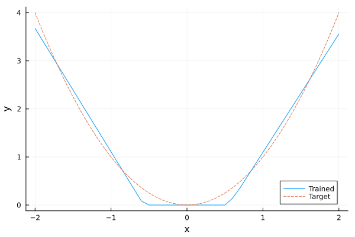

Input Convex Neural Networks with PyTorch
This tutorial shows how to embed an input convex neural network (ICNN) model from PyTorch into JuMP.
To use PyTorch from MathOptAI, you must first follow the Python integration instructions.
Required packages
This tutorial requires the following packages
using JuMP
import HiGHS
import MathOptAI
import Plots
import PythonCallBuilding the ICNN
The following custom layer can be used to build ICNNs. This layer has two forward methods. One that takes a single input and the other takes a Tuple. They both return the result of the forward pass as well as the original input.
dir = mktempdir()
write(
joinpath(dir, "icnn.py"),
"""
import math
import torch
from torch.nn.parameter import Parameter
from torch.nn import functional as F, init
class InputConvex(torch.nn.Module):
def __init__(
self,
in_features_z: int,
in_features_x: int,
out_features: int,
bias: bool = True,
activation = F.relu,
device=None,
dtype=None,
):
factory_kwargs = {"device": device, "dtype": dtype}
super().__init__()
self.activation = activation
self.in_features_z = in_features_z
self.in_features_x = in_features_x
self.out_features = out_features
self.weight_z = Parameter(
torch.empty((out_features, in_features_z), **factory_kwargs)
)
self.weight_x = Parameter(
torch.empty((out_features, in_features_x), **factory_kwargs)
)
if bias:
self.bias = Parameter(torch.empty(out_features, **factory_kwargs))
else:
self.register_parameter("bias", None)
self.reset_parameters()
def reset_parameters(self) -> None:
init.kaiming_uniform_(self.weight_z, a=math.sqrt(5))
init.kaiming_uniform_(self.weight_x, a=math.sqrt(5))
if self.bias is not None:
fan_in_z, _ = init._calculate_fan_in_and_fan_out(self.weight_z)
fan_in_x, _ = init._calculate_fan_in_and_fan_out(self.weight_x)
bound_z = 1 / math.sqrt(fan_in_z) if fan_in_z > 0 else 0
bound_x = 1 / math.sqrt(fan_in_x) if fan_in_x > 0 else 0
init.uniform_(self.bias, -bound_z, bound_z)
init.uniform_(self.bias, -bound_x, bound_x)
def forward(self, *args):
if len(args) == 1 and isinstance(args[0], tuple):
args = args[0]
if len(args) == 1:
input_x = args[0]
output = self.activation(input_x @ self.weight_x.T + self.bias)
return output, input_x
elif len(args) == 2:
input_z, input_x = args
output = self.activation(
input_z @ F.softplus(self.weight_z).T +
input_x @ self.weight_x.T +
self.bias
)
return output, input_x
class InputConvexChain(torch.nn.Module):
def __init__(self, *layers):
super(InputConvexChain, self).__init__()
self.layers = torch.nn.ModuleList(layers)
def forward(self, x):
layer1 = self.layers[0]
z, x = layer1(x)
for layer in self.layers[1:]:
if isinstance(layer, InputConvex):
z, x = layer(z, x)
else:
z = layer(z)
return z
""",
)
filename = joinpath(dir, "icnn.pt")"/tmp/jl_FzJxrM/icnn.pt"Next, we import the network and the layers using PythonCall.@pyexec:
predictor, InputConvex, InputConvexChain = PythonCall.@pyexec(
(dir, filename) =>
"""
import torch
from torch.nn import ReLU
import sys
sys.path.insert(0, dir)
from icnn import InputConvexChain, InputConvex
predictor = InputConvexChain(
InputConvex(8, 8, 2),
ReLU(),
InputConvex(2, 8, 1),
ReLU(),
)
torch.save(predictor, filename)
""" => (predictor, InputConvex, InputConvexChain)
)(predictor = <py InputConvexChain(
(layers): ModuleList(
(0): InputConvex()
(1): ReLU()
(2): InputConvex()
(3): ReLU()
)
)>, InputConvex = <py class 'icnn.InputConvex'>, InputConvexChain = <py class 'icnn.InputConvexChain'>)Let's test the ICNN:
torch = PythonCall.pyimport("torch")
predictor(torch.rand(8))Python: tensor([0.4998], grad_fn=<ReluBackward0>)Building the Predictor
To embed InputConvexChain into JuMP, we create the following callback function:
_array(x) = PythonCall.pyconvert(Array{Float64}, x.detach().cpu().numpy())
function icnn_callback(icnn::PythonCall.Py; input_size, kwargs...)
softplus = MathOptAI.SoftPlus()
nn = PythonCall.pyimport("torch.nn")
(layer1, layers) = Iterators.peel(icnn.layers)
p = MathOptAI.Pipeline(
MathOptAI.Affine(_array(layer1.weight_x), _array(layer1.bias)),
)
for layer in layers
if PythonCall.pyisinstance(layer, InputConvex)
w = hcat(softplus.(_array(layer.weight_z)), _array(layer.weight_x))
push!(p.layers, MathOptAI.Affine(w, _array(layer.bias)))
else
push!(p.layers, MathOptAI.build_predictor(layer; kwargs...))
end
end
return InputConvexChainPredictor(p)
endicnn_callback (generic function with 1 method)In addition, we need to implement and add_predictor for InputConvexChain in order to be able to embed this network into JuMP. For this purpose, we define InputConvexChainPredictor and implement add_predictor:
struct InputConvexChainPredictor <: MathOptAI.AbstractPredictor
p::MathOptAI.Pipeline
end
function MathOptAI.add_predictor(
model::JuMP.AbstractModel,
predictor::InputConvexChainPredictor,
x::Vector;
kwargs...,
)
layers = predictor.p.layers
z, inner = MathOptAI.add_predictor(model, first(layers), x; kwargs...)
formulation = MathOptAI.PipelineFormulation(predictor, Any[inner])
for layer in layers[2:end]
z, inner = if layer isa MathOptAI.Affine
MathOptAI.add_predictor(model, layer, [z; x]; kwargs...)
else
MathOptAI.add_predictor(model, layer, z; kwargs...)
end
push!(formulation.layers, inner)
end
return z, formulation
endWith that, we are now ready to embed these networks into JuMP.
Embed ICNN into JuMP
We can now embed predictor into a JuMP model. We choose to embed the nn.ReLU predictor using ReLUSOS1:
model = Model()
@variable(model, x[1:8])
config = Dict(:ReLU => MathOptAI.ReLUSOS1, InputConvexChain => icnn_callback)
z, formulation = MathOptAI.add_predictor(model, predictor, x; config);z1-element Vector{JuMP.VariableRef}:
moai_ReLU[1]formulationAffine(A, b) [input: 8, output: 2]
├ variables [2]
│ ├ moai_Affine[1]
│ └ moai_Affine[2]
└ constraints [2]
├ -0.11325346678495407 x[1] + 0.19977328181266785 x[2] + 0.2144526094198227 x[3] - 0.24359212815761566 x[4] - 0.024468984454870224 x[5] + 0.3409998118877411 x[6] + 0.10492850095033646 x[7] - 0.009559073485434055 x[8] - moai_Affine[1] = 0.02439611218869686
└ 0.16769489645957947 x[1] - 0.17127518355846405 x[2] - 0.2887903153896332 x[3] - 0.17544569075107574 x[4] + 0.12472794950008392 x[5] - 0.1404557228088379 x[6] - 0.29681524634361267 x[7] - 0.25820785760879517 x[8] - moai_Affine[2] = 0.2492154836654663
MathOptAI.ReLUSOS1()
├ variables [4]
│ ├ moai_ReLU[1]
│ ├ moai_ReLU[2]
│ ├ moai_z[1]
│ └ moai_z[2]
└ constraints [8]
├ moai_ReLU[1] ≥ 0
├ moai_z[1] ≥ 0
├ moai_Affine[1] - moai_ReLU[1] + moai_z[1] = 0
├ [moai_ReLU[1], moai_z[1]] ∈ MathOptInterface.SOS1{Float64}([1.0, 2.0])
├ moai_ReLU[2] ≥ 0
├ moai_z[2] ≥ 0
├ moai_Affine[2] - moai_ReLU[2] + moai_z[2] = 0
└ [moai_ReLU[2], moai_z[2]] ∈ MathOptInterface.SOS1{Float64}([1.0, 2.0])
Affine(A, b) [input: 10, output: 1]
├ variables [1]
│ └ moai_Affine[1]
└ constraints [1]
└ 0.3295442759990692 x[1] - 0.15512029826641083 x[2] + 0.3403259813785553 x[3] - 0.18886272609233856 x[4] - 0.03698347881436348 x[5] - 0.0037027690559625626 x[6] - 0.21440552175045013 x[7] + 0.09329777956008911 x[8] + 0.4692170919955159 moai_ReLU[1] + 0.9438177439233774 moai_ReLU[2] - moai_Affine[1] = -0.23887909948825836
MathOptAI.ReLUSOS1()
├ variables [2]
│ ├ moai_ReLU[1]
│ └ moai_z[1]
└ constraints [4]
├ moai_ReLU[1] ≥ 0
├ moai_z[1] ≥ 0
├ moai_Affine[1] - moai_ReLU[1] + moai_z[1] = 0
└ [moai_ReLU[1], moai_z[1]] ∈ MathOptInterface.SOS1{Float64}([1.0, 2.0])
Epigraph formulations
The nice thing about ICNNs is that we can formulate their epigraph and avoid adding binary variables to the model. For that, we can use ReLUEpigraph.
Let's first train a model to predict the relationship $y = x^2$. (Note that this is a very basic training loop.)
predictor = PythonCall.@pyexec(
(dir, filename) =>
"""
import torch
from torch.nn import ReLU
import sys
sys.path.insert(0, dir)
from icnn import InputConvexChain, InputConvex
torch.manual_seed(61)
predictor = InputConvexChain(
InputConvex(1, 1, 10),
ReLU(),
InputConvex(10, 1, 1),
ReLU(),
)
loss_fn = torch.nn.MSELoss()
optimizer = torch.optim.SGD(predictor.parameters(), lr=0.01, momentum=.9)
predictor.train()
X = torch.unsqueeze(torch.arange(-2, 2, step=.1), 1)
Y = torch.pow(X, 2)
epochs = 100
running_loss = 0.
for e in range(epochs):
optimizer.zero_grad()
Y_hat = predictor(X)
loss = loss_fn(Y_hat, Y)
loss.backward()
optimizer.step()
if e % 10 == 9:
last_loss = running_loss # loss per batch
print(f' batch {e + 1} loss: {loss.item()}')
torch.save(predictor, filename)
""" => predictor
)Python:
InputConvexChain(
(layers): ModuleList(
(0): InputConvex()
(1): ReLU()
(2): InputConvex()
(3): ReLU()
)
)Now we can embed the trained network into a JuMP model:
model = Model(HiGHS.Optimizer)
set_silent(model)
@variable(model, x[1:1])
config =
Dict(:ReLU => MathOptAI.ReLUEpigraph, InputConvexChain => icnn_callback)
y, _ = MathOptAI.add_predictor(model, predictor, x; config)
@objective(model, Min, only(y))
modelA JuMP Model
├ solver: HiGHS
├ objective_sense: MIN_SENSE
│ └ objective_function_type: JuMP.VariableRef
├ num_variables: 23
├ num_constraints: 33
│ ├ JuMP.AffExpr in MOI.EqualTo{Float64}: 11
│ ├ JuMP.AffExpr in MOI.GreaterThan{Float64}: 11
│ └ JuMP.VariableRef in MOI.GreaterThan{Float64}: 11
└ Names registered in the model
└ :xBecause we used the ReLUEpigraph predictor, there are no binary or integer variables in our model.
Moreover, we can show that the objective value y is convex with respect to x:
x_value, y_value = -2:0.1:2, Float64[]
for xi in x_value
fix(x[1], xi)
optimize!(model)
# To prove we are solving an LP and not a MIP, require dual solutions.
assert_is_solved_and_feasible(model; dual = true)
push!(y_value, objective_value(model))
end
Plots.plot(x_value, y_value; xlabel = "x", ylabel = "y", label = "Trained")
Plots.plot!(x_value, x_value .^ 2; label = "Target", linestyle = :dash)
This page was generated using Literate.jl.